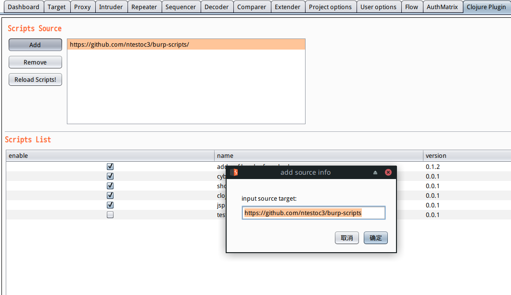
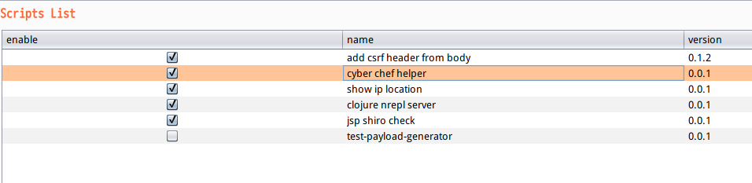
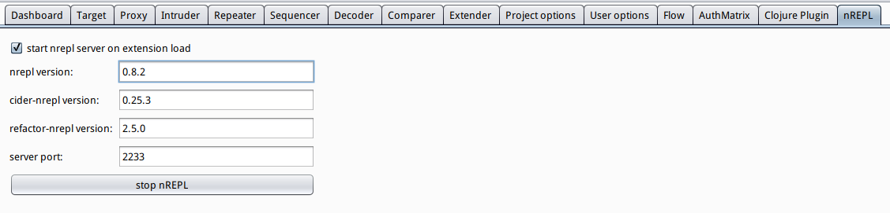

使用Clojure编写burp扩展脚本
1 插件简介
burp-clj插件提供使用clojure编写burp脚本的功能。由于clojure的repl工作流很强大，开启nrepl之后，可以直接在burp的jvm进程中进行调试测试，非常方便。
2 使用方法
在release页面下载jar文件，然后在Burp Extender选项卡中加载jar插件。
加载成功后，会出现Clojure Plugin选项卡，点Add添加脚本目录，支持github地址和本地目录。 可以添加示例脚本地址https://github.com/ntestoc3/burp-scripts:

图1 添加脚本目录
第一次加载会下载依赖包，速度比较慢。
脚本列表里显示脚本名称，版本号和是否启用。

图2 脚本列表
脚本可以使用burp extender API的所有功能,burp-clj提供了简单的包装。
比如nrepl.clj脚本提供了启动/停止clojure nrepl的功能，使用burp extender API添加了一个新的选项卡(使用reg-script!包装过的声明式的方式生成选项卡)。

图3 nrepl脚本选项卡
注册burp选项卡的代码:
(def reg (scripts/reg-script! :nrepl-server {:name "clojure nrepl server" :version "0.0.1" :min-burp-clj-version "0.1.1" ;; 启用脚本时执行 :enable-callback (fn [_] (start-nrepl)) ;; 禁用脚本时执行 :disable-callback (fn [_] (stop-nrepl)) ;; 添加tab :tab {:nrepl-main ;; tab的key,必须全局唯一 {;; 标题 :captain "nREPL" ;; gui视图 :view (make-nrepl-view)} ;; 可以添加更多的tab,使用不同的key } }))
3 脚本编写方法
burp-clj提供对各种register和remove方法的封装，不要在脚本中调用这些方法，否则会造成脚本reload功能异常。使用reg-script!函数注册脚本的各种功能，可以参考burp-scripts中的脚本，例如shiro_check.clj:
(def reg (scripts/reg-script! :shiro-check ;; 脚本唯一id,如果执行多次,最后一次执行的生效 {:name "jsp shiro check" ;; 脚本名字 :version "0.0.1" ;; 当前版本号 :min-burp-clj-version "0.1.1" ;; burp-clj最低版本号 ;; 添加 proxy listener :proxy-listener {:shiro-check/cookie-check ;; proxy listener的key,自己指定，不过所有脚本的key不能有重复，建议使用带命名空间的keyword (shiro-check-proxy) ;; 可以指定多个proxy listener, 使用不同的key即可 } }))
脚本中可以使用add-dep添加新的依赖包，例如ip_loc.clj中:
(utils/add-dep '[[ntestoc3/netlib "0.3.4-SNAPSHOT"]]) (require '[netlib.qqwry :as qqwry])
4 总结
burp-clj对Burp Extender API进行包装,并提供clojure运行时环境，通过nrepl可以方便地操作burp，针对特定操作也可以直接修改脚本，动态加载卸载。
现阶段命名空间组织比较分散,也缺少相应的文档注释。
注意不要加载来源不明的脚本文件，脚本可以执行任意代码，可能会危害本地系统。
如果有burp插件需求，欢迎提issue。